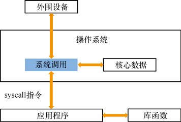

首页 > 编程笔记
系统调用（System Call）是怎么回事？
系统调用允许应用程序获得只有操作系统才有权限执行的服务。
系统调用（System Call）是操作系统提供的一组功能接口，给应用程序实现一系列高权限的功能服务。系统调用一般是实现整个计算机的核心资源的访问和管理功能。
例如下面3种功能：
系统调用的设计意义是给应用程序提供普通权限下无法实现的功能服务。
上面举例的3种数据信息都是属于计算机的核心资源，应用程序不能直接访问，但是应用程序又有获取这些数据信息的正常需求，操作系统就把这些功能封装成功能接口，应用程序可以在需要时调用这些功能接口来获得数据信息。
操作系统在执行系统调用之前会对应用程序进行“安全检查”。
系统调用由操作系统负责执行，在 CPU 的高特权级别下执行。为了防止恶意的应用程序获取非法信息、破坏系统安全，操作系统会对应用程序的权限进行严格检查，只对合法的应用程序提供系统调用功能。
每一种操作系统都规定了“系统调用列表”，例如 Linux 内核的系统调用列表有 200 多项。
系统调用指令是 CPU 为应用程序提供的一条指令，应用程序通过执行系统调用指令来获取操作系统的服务，如图1所示。
例如，龙芯 CPU 的系统调用指令为 syscall。CPU 在执行应用程序时如果遇到 syscall 指令，则会将特权级切换为操作系统等级，然后转到操作系统中执行系统调用的模块，来实现应用程序所需要的服务。
系统调用模块执行结束后，CPU 跳回应用程序，继续执行 syscall 之后的指令。
对应用程序进行剖析，可以写成下面的等式：
系统调用和库函数有本质不同。库函数也是由应用态的指令序列组成的，都是在应用态的权限下执行，无法访问计算机的核心资源、外围设备，不会像系统调用一样发生特权级的切换、进入操作系统执行。
系统调用（System Call）是操作系统提供的一组功能接口，给应用程序实现一系列高权限的功能服务。系统调用一般是实现整个计算机的核心资源的访问和管理功能。
例如下面3种功能：
- 查看资源使用情况：例如操作系统中的进程数量，这个信息属于操作系统的核心数据，保存在操作系统私有的数据区中，应用程序不能直接访问。
- 读取外设数据：例如网卡、硬盘中的数据，只有操作系统才有权限执行 I/O 指令进行访问。
- 获取计算机的当前时间：计算机主板上有时钟硬件来保存日期、时间信息，这样的设备也只有操作系统才能访问。
系统调用的设计意义是给应用程序提供普通权限下无法实现的功能服务。
上面举例的3种数据信息都是属于计算机的核心资源，应用程序不能直接访问，但是应用程序又有获取这些数据信息的正常需求，操作系统就把这些功能封装成功能接口，应用程序可以在需要时调用这些功能接口来获得数据信息。
操作系统在执行系统调用之前会对应用程序进行“安全检查”。
系统调用由操作系统负责执行，在 CPU 的高特权级别下执行。为了防止恶意的应用程序获取非法信息、破坏系统安全，操作系统会对应用程序的权限进行严格检查，只对合法的应用程序提供系统调用功能。
每一种操作系统都规定了“系统调用列表”，例如 Linux 内核的系统调用列表有 200 多项。
应用程序怎样执行系统调用指令？
每一种 CPU 都定义了执行系统调用的指令。系统调用指令是 CPU 为应用程序提供的一条指令，应用程序通过执行系统调用指令来获取操作系统的服务，如图1所示。

图1：应用程序获取系统调用服务
图1：应用程序获取系统调用服务
例如，龙芯 CPU 的系统调用指令为 syscall。CPU 在执行应用程序时如果遇到 syscall 指令，则会将特权级切换为操作系统等级，然后转到操作系统中执行系统调用的模块，来实现应用程序所需要的服务。
系统调用模块执行结束后，CPU 跳回应用程序，继续执行 syscall 之后的指令。
对应用程序进行剖析，可以写成下面的等式：
应用程序 = 指令序列 + 库函数 + 系统调用
库函数（Library Function）也是给应用程序提供的一组封装好的功能服务，通常使用程序语言编写，然后编译成功能模块，可以让应用程序重复调用。最典型的库函数就是C语言中的 printf() 输出函数。系统调用和库函数有本质不同。库函数也是由应用态的指令序列组成的，都是在应用态的权限下执行，无法访问计算机的核心资源、外围设备，不会像系统调用一样发生特权级的切换、进入操作系统执行。
关注公众号「站长严长生」，在手机上阅读所有教程，随时随地都能学习。内含一款搜索神器，免费下载全网书籍和视频。

微信扫码关注公众号